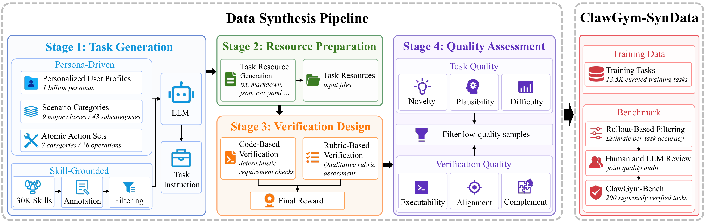
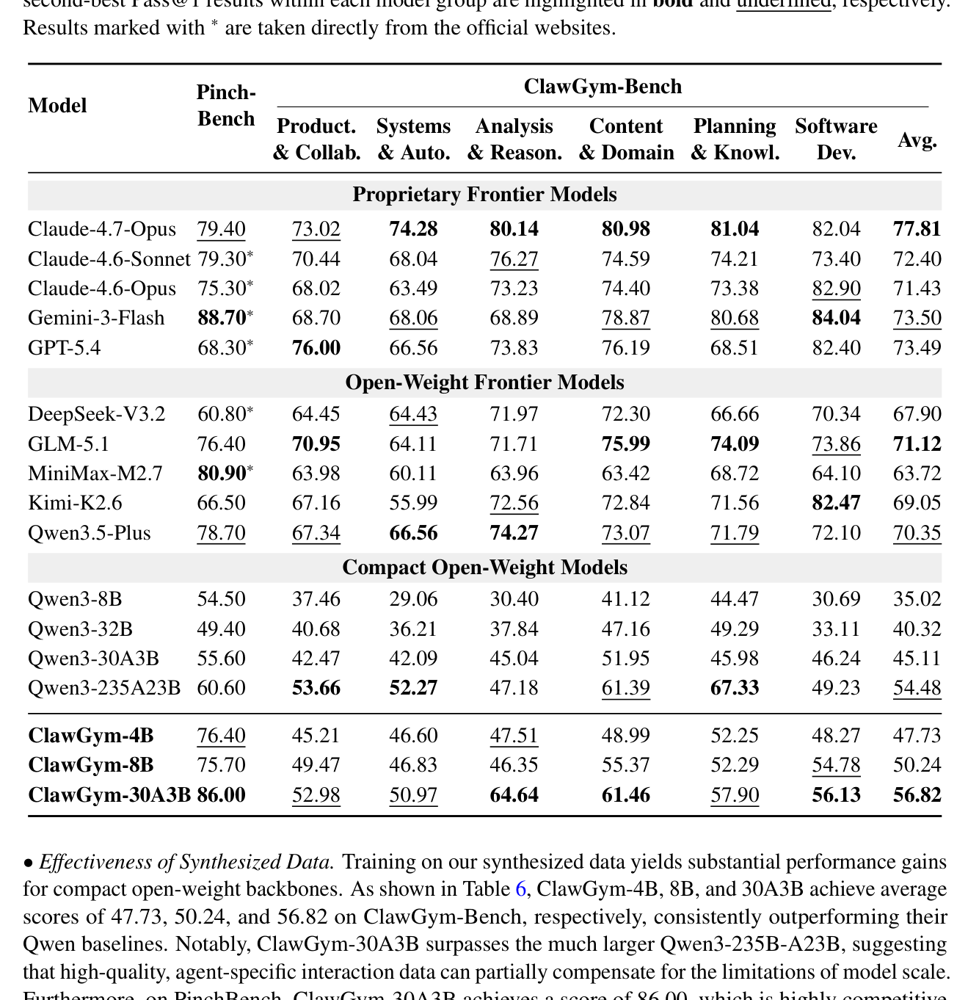

ClawGym：为 Claw 式个人 agent 打造可规模化的「数据合成 + 训练 + 评测」一体化框架
ClawGym: A Scalable Framework for Building Effective Claw Agents
①开源贡献 Open-source Artifacts
论文摘要写明资源已在 GitHub 组织 github.com/ClawGym 发布。解读日核实：该组织下确有 ClawGym-Agents、ClawGym-Bench、ClawGym-SynData 三个公开仓库（均 2026-05 创建、仍在更新），README 指向 Hugging Face 上的 RUC-AIBOX/ClawGym-* 权重与 RUC-AIBOX/ClawGym-Task / ClawGym-Trajectory 数据集，三个 HF 权重页与数据集页均真实存在。未见任何仓库标注开源许可证（license 未说明），数据合成 pipeline 的完整生成代码截至解读日似未完整释出，使用前请以官方页为准。
| 类型 | 是否开源 | 内容 / 链接 |
|---|---|---|
| 代码 Code | ✔ | ClawGym-Agents（SFT/RL 训练代码）、ClawGym-Bench（benchmark 数据 + 评测脚本）。数据合成 pipeline 完整代码未见完整释出。许可证未标注。 |
| 模型权重 Weights | ✔ | Hugging Face RUC-AIBOX：ClawGym-4B / ClawGym-8B / ClawGym-30A3（BF16 safetensors；分别基于 Qwen3-4B/8B/30B-A3B SFT。无 model card，license 未标注）。 |
| 数据集 Dataset | ✔ | ClawGym-Task（≈13.5K 合成任务，含 mock 资源与 verifier）+ ClawGym-Trajectory（≈24.5K SFT 轨迹）。解读日 Task 的在线 viewer 因 schema 报错无法预览，但文件存在。license 未标注。 |
| 环境 / Benchmark | ✔ | ClawGym-Bench（200 题，6 类，harness-based 评测）随 ClawGym-Bench 仓库 发布。训练/评测均直接基于第三方 OpenClaw harness（非本文产物）。 |
| 项目主页 / Demo | ✘ | 未见独立项目主页或在线 demo，资源集中在上述 GitHub 组织与 HF。 |
②研究动机与贡献 Motivation & Contribution
背景与问题
OpenClaw 这类「个人 agent」直接部署在用户电脑环境里：它们能调用 tool、管理本地文件系统、与 web 服务交互，让用户「养」一个数字 agent 去完成多步、跨 session 的日常工作流。但即便接最强 LLM，它们在很多日常数字任务上仍不可靠；换成能力较弱的 LLM 更明显——常常无法跟随多步指令、选错 tool，或在出错后无法恢复。
论文指出 Claw 式任务有其独特性，和两类已有任务都不同：（1）它不像 AIME 这种纯文本推理题——后者题面完备、靠纯推理可解；Claw 任务 grounded 在本地 workspace 状态上，agent 要对已有 artifact 做推理、执行 tool、并通过多步交互更新 workspace；（2）它也不像 SWE-Bench-Verified、BrowseComp 这种结构化、可观测的 agent-loop benchmark——OpenClaw 这类系统是高度封装的「黑盒」，内部 context 管理、subagent session 完全不透明，agent 要直面模糊指令、意外 workspace 状态、tool 执行错误和跨 session 的长程依赖。因此评测必须是 workspace-grounded 的，而非静态推理或结构化 agent-loop。
已有研究要么走专门训练算法 / online learning 从用户交互里抽监督信号，要么造评测 benchmark。但它们普遍卡在缺乏大规模、grounded 在用户 workspace 上的 Claw 式任务数据。大规模合成这种数据有三难：① 要覆盖不同职业 / routine 的个性化需求，很难定义有代表性的任务设定；② 长程性质（一连串文件操作、tool 调用、workspace 更新、中间校验）给自动化判分带来巨大的可验证性挑战；③ grounding 在本地 workspace 上需要真实的 mock workspace 与任务专属 artifact 来提供执行上下文。
本文的切入点
作者主张用一个 data-centric 框架把任务合成、agent 训练、性能评测统一起来。核心是 双路合成：persona-driven 的 top-down 路把任务锚在高层用户 persona 与场景 intent 上（保证场景多样性），skill-grounded 的 bottom-up 路把 OpenClaw 实际可执行的 skill 组合成多步工作流（保证操作可落地）。再配 自动实例化 mock workspace 与 hybrid verification（确定性 code checker + 定性 rubric verifier），让每条任务既多样又可验证。有了可验证数据，就能顺势设计训练（黑盒轨迹蒸馏 + SFT，再加轻量 RL）与诊断 benchmark。
核心贡献
- ClawGym-SynData：首个面向 Claw agent 的大规模合成数据集，含 13.5K 条可执行任务；自动合成 pipeline 把 persona-driven intent 与 skill-grounded 操作结合，能可规模化地生成多样、可验证的 Claw 式训练数据。
- ClawGym-Agents：通过 OpenClaw 上的 black-box rollout 收集高质量 trajectory 并做 SFT，得到一族 Claw agent（4B / 8B / 30B-A3B）；并用一个带 sandbox 并行的轻量 RL pipeline 进一步带来稳定增益。
- ClawGym-Bench：横跨 6 大类、共 200 题的评测集，经过 difficulty-aware 过滤 + 人机协审保证可靠性，能清晰暴露不同规模 Claw agent 之间的能力差距。
③方法 Method
整体分三大组件，对应论文第 3/4/5 节：ClawGym-SynData（造数据）→ ClawGym-Agents（用数据训 agent）→ ClawGym-Bench（评 agent）。先看任务的形式化定义，再看数据合成 pipeline（图 1），随后展开训练与评测。
任务定义
一条 Claw 式任务实例形式化为 $\tau=\langle p, s_0, \mathcal{A}, \mathcal{F}, \mathcal{V}_\tau\rangle$：$p$ 是用户指令，$s_0$ 是初始 workspace 状态（本地文件、配置、web 接口等），$\mathcal{A}$ 是可用动作集（每个动作即一次 tool 调用 / 可执行操作），$\mathcal{F}$ 描述 tool 执行如何更新环境状态，$\mathcal{V}_\tau$ 是任务专属 verifier。agent 产出 action/observation 交替的 trajectory $\xi=(A_1,O_1,\dots,A_K,O_K)$，且支持「连发多个 tool 调用再统一接收反馈」的非严格交替模式。每个可执行动作后状态按 $s_t=\mathcal{F}(s_{t-1},a_t)$ 更新；任务的主要产出是最终环境状态 $s_H$（新建/改写的文件、重排的目录、生成的报告等），而非最后那段自然语言回复。verifier 给分 $v=\mathcal{V}_\tau(s_0,s_H,y)\in[0,1]$，$v=1$ 为满分；本文聚焦 final-state 正确性，把动作安全/效率/纠错能力的细粒度评估留给未来。

组件一：ClawGym-SynData——任务合成（四阶段）
Stage 1 · 任务生成（双路合成）。
- Persona-driven top-down：先造 task seed $z=(u,c,\mathcal{G})$——$u$ 是用户 persona（从十亿级 persona 池采样，含职业、偏好、工作上下文），$c$ 是场景类别（taxonomy 含 9 大类 / 43 子类，每个 seed 选一个子类），$\mathcal{G}=\{g_1,\dots,g_n\}$ 是基础操作集（atomic-operation taxonomy 含 7 类 / 26 个操作，如 web 检索、文件处理、文档编辑、数据分析、脚本执行、结果汇报）。再用模板 $\pi(\cdot)$ 把 seed 喂给任务生成器 $\mathcal{M}_{\text{task}}$（即 GPT-5）生成面向用户的指令 $p=\mathcal{M}_{\text{task}}(\pi(z))$。persona 与场景决定任务方向，选定的基础操作把指令约束在可在 workspace 里落地的动作上。
- Skill-grounded bottom-up：从 ClawHub 收集原始 OpenClaw skill（每个 skill 是含
SKILL.md/README.md的目录）。先用强 LLM（即 MiniMax-M2.5）做 skill annotator $\mathcal{M}_{\text{ann}}$ 把每个 skill 转成结构化标注 $\alpha_i$（含 summary、核心内容、使用约束、输入输出特征，以及二元 synthesizability 标签 $y_i$），保留可合成集 $\mathcal{K}^{+}=\{(k_i,\alpha_i)\mid y_i=1\}$；从约 30K 原始 skill 过滤出 16K 可合成 skill（实际表中 16,837 条）。再以 1 个 primary skill + 至多 3 个 supporting skill 组合，由 GPT-5 生成指令 $p=\mathcal{M}_{\text{task}}(\pi(k_{\text{main}},\mathcal{K}_{\text{support}}))$，鼓励跨能力的多步协同。
Stage 2 · 资源准备。给定指令 $p$，先抽出文件需求并表示为资源规格 $f=\{(l_i,t_i,d_i)\}_{i=1}^{m}$（路径 $l_i$、类型 $t_i$、内容规格 $d_i$），再用 LLM 资源生成器（GPT-5）物化成具体 mock 文件放到指定路径。不用真实用户文件或大型外部数据集，而是为每条任务造轻量、任务专属、可验证的 mock 文件（txt/markdown/json/csv/yaml…），让任务自包含、可复现、且与 verifier 一致，同时规避隐私风险。
Stage 3 · 验证设计（hybrid verification）。用 GPT-5 为每条任务同时生成 code checker 与 rubric。
- Code-based：把客观需求拆成原子验证点 $\mathcal{C}=\{c_1,\dots,c_m\}$（文件是否存在、JSON 字段是否正确、统计量是否对、生成 artifact 是否满足约束等），每点返回二值 $b_i=\mathbb{I}[c_i(p,s_0,s_H,y)=\text{true}]$，得分 $s_{\text{code}}=\frac{1}{m}\sum_i b_i$。checker 还会在输入资源与输出之间做交叉校验（如从输入 CSV 重算统计量）。
- Rubric-based：对难以用代码判定的定性维度（语气、清晰度、组织、忠实度、完整度等）定义规则 $\mathcal{R}=\{r_1,\dots,r_n\}$，每条按序数打分 $q_j\in\{0,0.25,0.5,0.75,1.0\}$，加权得 $s_{\text{rubric}}=\frac{\sum_j w_j q_j}{\sum_j w_j}$（默认等权）。
- 聚合：只有 code 的任务 $s_{\text{task}}=s_{\text{code}}$；兼有两者时 $s_{\text{task}}=\lambda s_{\text{code}}+(1-\lambda)s_{\text{rubric}}$，本文取 $\lambda=0.7$，把更大权重给可复现的确定性 workspace 改动。
Stage 4 · 自动质量评估。双重把关：① 任务质量——novelty（用 task embedding 的 cosine 相似度，与已保留任务池的最大相似度低于阈值才算够新）、plausibility（GPT-5.4 判二元：是否清晰、自洽、不依赖不存在的工具/服务）、difficulty（GPT-5.4 估完成复杂度，维持简单/中等/困难的平衡）；② 验证质量——code checker 要做「可执行性 sanity check」（在仅放输入文件、无 agent 输出的初始 workspace 上跑 checker，若此时就给非平凡分数说明 checker 过松，淘汰）和「task-checker 对齐审查」（GPT-5.4 检查 requirement coverage 与 over-strictness）；rubric 要补充而非重复 code 可验的维度。最终留下 13.5K 训练任务。人工抽 50 条按 1–5 打分，整体 4.06（task reasonableness 4.46、resource consistency 4.36、verification quality 3.92、execution feasibility 3.50）。
组件二：ClawGym-Agents——黑盒轨迹 + SFT + 轻量 RL
Black-box rollout。OpenClaw 是高度封装的黑盒，内部 context 管理与 subagent session 不透明，无法套用传统 agent-loop 训练。作者不另写 agent loop，而是直接用 OpenClaw harness 本体：在分布式集群部署多个 OpenClaw Docker 环境，每个当作可执行黑盒；为每条任务分配 workspace 物料，在容器里构建初始环境并用 OpenClaw runtime 解题；再插一个 proxy 层 拦截 rollout 期间每次 request/response，完整捕获 model 输入输出、tool 调用与环境反馈，从而在不改 agent 逻辑的前提下保留 OpenClaw 原生控制流与交互语义。teacher 模型用 MiniMax-M2.5 与 GLM-5.1 各自 rollout，混合蒸馏。
轨迹聚合与筛选。proxy 按单次 model 调用粒度抓 request，需按相同 message 前缀分组、拼接后续轮次，重建连贯多轮序列；并剔除 cron/heartbeat 等与解题无关的系统提醒、过滤含不支持 tool（如 canvas 操作）的轨迹。由于 hybrid verifier 给的是 $[0,1]$ 连续分而非二值，标准 best-of-$N$ 不适用，作者改用 reward-threshold 过滤：先确认轨迹是完整有效的交互过程，再保留 final score 超阈值者，最终得 24.5K 条高保真 trajectory。被选轨迹平均 13.00 轮、18.67K token、15.82 次 tool 调用、3.25 种 tool 类型——确为非平凡的多轮执行。
多轮 SFT。在 Qwen3 系列（Qwen3-4B-2507-Instruct、Qwen3-8B、Qwen3-30B-A3B-2507-Instruct）上做多轮 SFT。Claw 轨迹很长，Qwen3-8B 原生 32K 上下文用 YaRN 扩到 64K。关键是 multi-turn loss masking：把 Docker 执行产生的环境反馈 token 排除出监督 loss，只对 model 生成的部分（reasoning、决策、tool-call 生成）算 loss——这样模型学的是「在环境里如何行动」，而非死记环境的确定性返回。得到 ClawGym-4B / 8B / 30B-A3B。
轻量 sandbox-parallel RL。把 OpenClaw agent loop 仍当黑盒，把每条任务虚拟成独立 sandbox（各有自己的 root 文件系统、workspace、gateway、verifier）。三个工程优点：① sandbox 并行 rollout、互不干扰；② 低基础设施依赖（Docker / Docker-free 后端可换）；③ 仅用 outcome reward（code verifier 直接给 reward，不需额外 reward model 或过程监督）。从两个起点跑 RL：vanilla 的 Qwen3-4B-2507-Instruct，以及 SFT 后的 ClawGym-30B-A3B；从 ClawGym-SynData 采 2000 题并按 tool 多样性平衡。用 GRPO，超参：lr 1e-6、train batch size 8、每 prompt 8 个 rollout、100 步、rollout 温度 0.7、最大响应长度 64K。两个起点都涨：4B 升到 35.7%、30B-A3B 升到 56.7%（图 3，仅用 code verifier 权重 1.0 评分）。
组件三：ClawGym-Bench——可靠诊断 benchmark
从合成池（已过任务/验证质量过滤、且排除训练集）里再严筛：difficulty-aware 过滤——每题用强 agent 与小 agent 各跑 $n=4$ 次 rollout，平均分 $\bar{s}_{\text{strong}}$、$\bar{s}_{\text{small}}$，仅保留同时满足 $\bar{s}_{\text{strong}}\ge 0.2$、$\bar{s}_{\text{small}}\le 0.6$、$\bar{s}_{\text{strong}}>\bar{s}_{\text{small}}$ 的题（既不过难/不稳，也不过易，且能区分能力差异）。再做 LLM 辅助人工复审：GPT-5.4 先诊断（任务是否清晰可行、资源是否支撑、checker 是否可执行且松紧合适、rubric 是否互补），人类做最终接受/修订/拒绝决策。最终 200 题、6 类（Productivity & Collaboration 44、Systems & Automation 42、Analysis & Reasoning 35、Content & Domain Support 28、Planning & Knowledge 26、Software Development 25），其中 156 题纯 code 验证、44 题 hybrid。还验证两性质：评测稳定性（50 题各跑 5 次，标准差 ≤1%，Qwen3-8B 36.4±0.3、Qwen3-30B-A3B 42.6±1.0）与 可解性（每题确认至少有一条可达满分的路径）。
④实验评估 Evaluation
评测设置
- Benchmark：本文 ClawGym-Bench（200 题，考 workspace-grounded 的文件操作/数据处理/文档编辑/脚本执行/沟通等）+ 外部 PinchBench（用 2026-04-10 释出的任务集，去掉多模态题，保留 30 题，用其原生 verifier）。两者都用 hybrid 协议：纯 code 题 code 权重 1.0；hybrid 题 code 0.7 / rubric 0.3，rubric judge 用 GPT-5.4。所有模型都在原生 OpenClaw 环境里通过 black-box rollout 收轨迹，上下文统一 64K。
- 对比基线：proprietary frontier（Claude-4.7-Opus / 4.6-Opus / 4.6-Sonnet、Gemini-3-Flash、GPT-5.4）、open-weight frontier（DeepSeek-V3.2、GLM-5.1、MiniMax-M2.7、Kimi-K2.6、Qwen3.5-Plus）、compact open-weight（Qwen3-8B/32B/30A3B/235A23B 及本文 ClawGym-4B/8B/30A3B）。
- 指标：Pass@1（最终 task score，越高越好，由 verifier 按式 (17) 聚合）。
主要结果
下表摘自原文 Table 6（Avg. 为 ClawGym-Bench 六类均值）。本文方法加粗，括号内为相对各自 Qwen3 baseline 的相对提升。
| 模型 | PinchBench | ClawGym-Bench (Avg.) |
|---|---|---|
| Claude-4.7-Opus（最强 baseline） | 79.40 | 77.81 |
| GPT-5.4 | 68.30 | 73.49 |
| Qwen3-8B（base） | 54.50 | 35.02 |
| ClawGym-8B | 75.70（+38.90%） | 50.24（+43.46%） |
| Qwen3-30B-A3B（base） | 55.60 | 45.11 |
| ClawGym-30A3B | 86.00（+54.68%） | 56.82（+25.96%） |
| Qwen3-235B-A23B（更大的 base） | 60.60 | 54.48 |
| ClawGym-4B | 76.40 | 47.73 |

怎么读这些数字：
- 合成数据对小模型增益巨大。ClawGym-4B/8B/30A3B 在 ClawGym-Bench 均值分别 47.73/50.24/56.82，全面超各自 Qwen baseline。最亮眼的是 ClawGym-30A3B（56.82）反超体量大得多的 Qwen3-235B-A23B（54.48），说明高质量 agent-specific 交互数据能部分弥补模型规模的不足。
- 跨分布泛化。这些模型只用 ClawGym-SynData 监督，却在外部 PinchBench 大涨（ClawGym-30A3B 达 86.00，可与若干闭源 frontier 掰手腕；ClawGym-8B 75.70 vs Qwen3-8B 54.50），表明学到的是可迁移的 agentic 原则而非过拟合合成模式。
- benchmark 有区分度。ClawGym-Bench 均值从 Qwen3-8B 的 35.02 到 Claude-4.7-Opus 的 77.81 拉出清晰梯度；且没有单一模型横扫六类——GPT-5.4 在 Product. & Collab. 最强、Gemini-3-Flash 在 Software Dev. 领先，说明各类考察不同能力。
- 诚实地看：训练后的小模型在 ClawGym-Bench 上仍明显落后闭源 frontier（50–57 vs 72–78），框架是「显著缩小差距」而非抹平；ClawGym-Bench 的相对提升对 30A3B（+25.96%）小于对 8B（+43.46%），即更大的 base 边际收益更小。RL 仅在「仅 code verifier」设定下报告（4B 35.7%、30A3B 56.7%），是探索性补充而非主结果。
消融 / 分析
- 双路合成的协同（Table 7）。Mixed Synthesis 优于任一单路：Qwen3-8B 上 ClawGym-Bench 50.24 / PinchBench 75.68，高于 Only Persona-driven（49.44 / 73.51）与 Only Skill-grounded（49.06 / 68.23）；30A3B 同样（56.82 / 86.00 vs 53.65 / 84.92 vs 52.27 / 80.05）。persona 路扩场景多样性、skill 路锚操作边界，二者互补。
- 训练规模 / 收敛（图 4）。跑 5 个 epoch（每 epoch 103 步），第 3 个 epoch（step 309）性能见顶，之后轻微但持续下滑——过多迭代会在合成分布上轻微过拟合。
- reward 阈值（图 5）。在 0.4–0.9 扫，阈值 0.5 在两个 benchmark 上都最好：太低引入完成度不足的轨迹污染监督，太高则剪掉有价值的纠错/部分策略行为。作者承认这仍是经验性选择。
- 行为分析（图 6/7/8，对比 GPT-5.4 vs Qwen3-30A3B）。三类典型差异：① tool-use appropriateness——强模型把 tool 组成「发现→检查→计算→验证」流水线，弱模型能从 wildcard 报错里恢复却建不起可靠聚合流程；② long-horizon robustness——强模型把报错当可恢复反馈（重置 state、重跑、验证幂等），弱模型在 approval 死锁里失败级联；③ fine-grained instruction following——弱模型产出「看起来合理但违反
Quantity ≤ ReorderPoint过滤规则」的 artifact，错误还会传播到下游供应商汇总。
⑤洞见 Insights
2）对 Claw 式任务，监督信号本质是「最终 workspace 状态」，所以 verifier 必须 code+rubric 混合且偏重 code（$\lambda=0.7$），训练时要掩码环境反馈 token、且用连续 reward 阈值（0.5）而非二值 best-of-N 来选轨迹。「能造出可验证任务」本身就是把 agent 训练问题转化为可优化问题的钥匙。
3）高质量 agent-specific 数据可部分替代模型规模：30B-A3B 经 SFT 后反超 235B，且在未见的 PinchBench 上泛化——说明瓶颈常在「有没有 grounded、可验证的交互数据」，而非单纯参数量。
局限与未来
作者自陈：① 评估只看 final-state 正确性，动作的安全/效率/纠错能力等 trajectory-level 性质尚未纳入（因开放环境下不同有效路径难一致判定）；② reward 阈值仍是经验选择，未来想研究对连续 verifier 分更有原则的筛选方法；③ SFT 超过 3 epoch 会在合成分布上轻微过拟合，提示「最优训练规模」需谨慎；④ RL 仅作轻量探索（仅 code verifier 评分、2000 题），尚非完整主结果。我的补充判断：合成数据高度依赖 GPT-5 / GPT-5.4 / MiniMax / GLM 等强 teacher，蒸馏天花板与其相关；且训练后的开源小模型与闭源 frontier 仍有可观差距，框架价值更多在「可规模化、可验证、低成本地把小模型推到可用」。
与相关工作的关系
按本文自身论述：相比 AIME 这类静态文本推理与 SWE-Bench-Verified / BrowseComp 这类结构化、可观测的 agent-loop benchmark，Claw 式任务的独特在于 grounding 在本地 workspace、且运行在不透明的封装系统里。已有针对个人 agent 的工作多是单点——要么专门训练算法 / online learning（如从用户交互抽信号），要么单独造评测 benchmark（多个 Claw/OpenClaw 评测）；ClawGym 的差异是把任务合成 + 训练 + 评测统一进一个 data-centric 全生命周期框架，并以「可规模化生成可验证数据」为核心抓手。